Draft — pictures from the live site (10/23, test student). ✳ = screen drawn by hand: no photo yet.시안 — 사진은 운영 화면(10/23, 테스트 학생 계정). ✳ = 사진이 없어 손으로 그린 화면.
MMinistry Manager Guide가이드북
📖
Study with BEEBEE 와 공부하기
Join a seminar, read your workbook, see your grades.세미나 신청 · 학습서 읽기 · 성적 보기.
What do you want to do?무엇을 하고 싶으세요?
Step단계
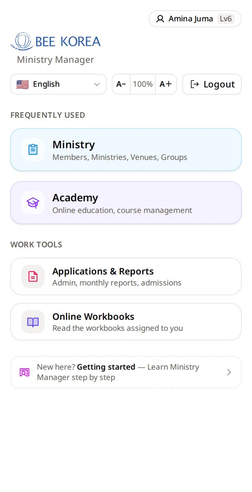
Tap AcademyAcademy 를 누르세요
On your home page.홈 화면에서.
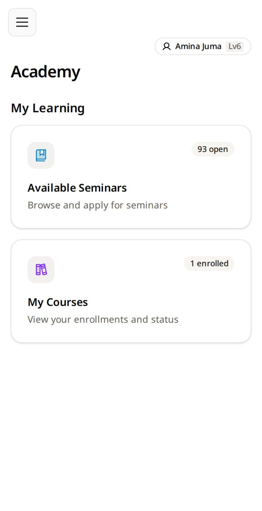
Tap Available SeminarsAvailable Seminars 를 누르세요
Seminars that are open for students.학생을 받고 있는 세미나들.
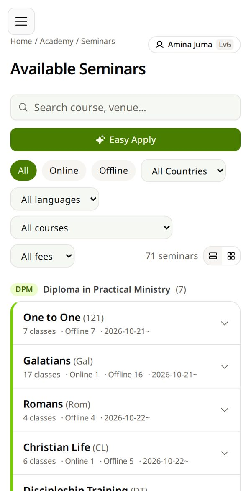
Tap Easy ApplyEasy Apply 를 누르세요
Three short questions find your class.짧은 질문 셋으로 내 반을 찾아 줍니다.
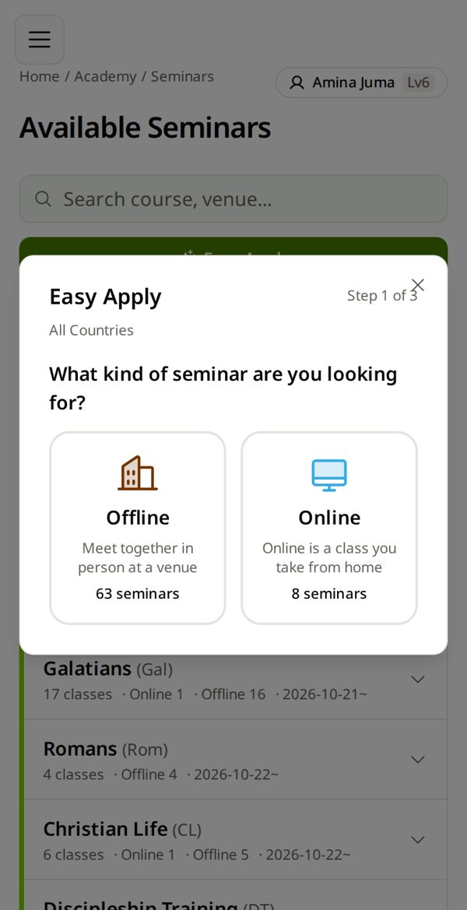
Meet in person? Tap Offline직접 모이면 Offline
From home? Tap Online.집에서 들으면 Online.
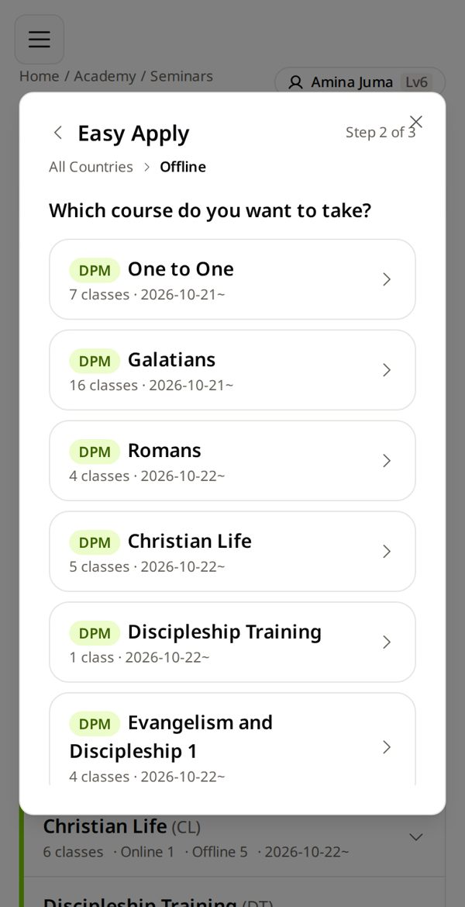
Tap your course내 과목을 누르세요
The book your facilitator told you — here, Romans.인도자가 알려 준 책 — 여기서는 로마서.
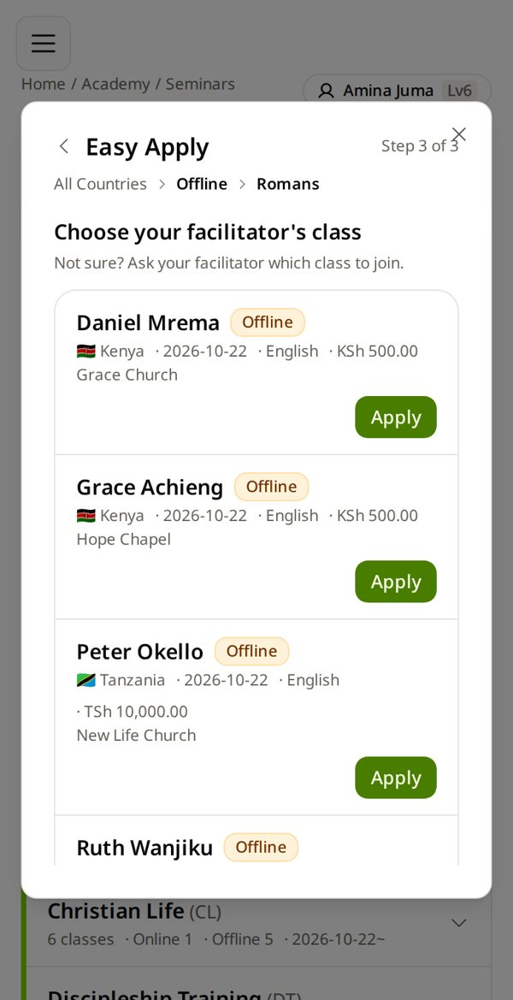
Find your facilitator → Apply내 인도자 이름 → Apply
Not sure which class? Ask your facilitator.어느 반인지 모르겠으면 인도자에게 물어보세요.
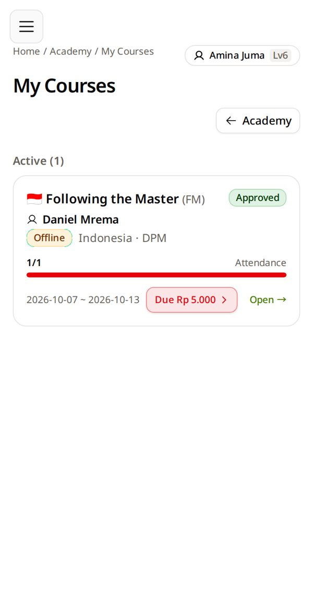
Wait for ApprovedApproved 가 될 때까지
My Courses shows Pending first. Your facilitator approves it.My Courses 에 먼저 Pending 으로 보입니다. 인도자가 승인합니다.
Applied to the wrong one? While it is Pending: tap Cancel Application on its card.잘못 신청했나요? Pending 인 동안 그 카드의 Cancel Application.
Tap Online WorkbooksOnline Workbooks 를 누르세요
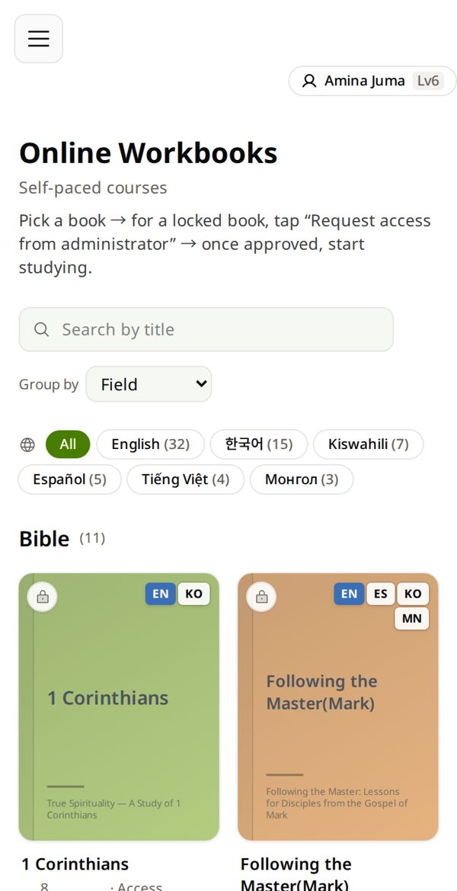
Find your book내 책을 찾으세요
Type its name, then tap the cover. 🔒 = you still need access.이름을 쓰고 표지를 누릅니다. 🔒 = 아직 신청이 필요.
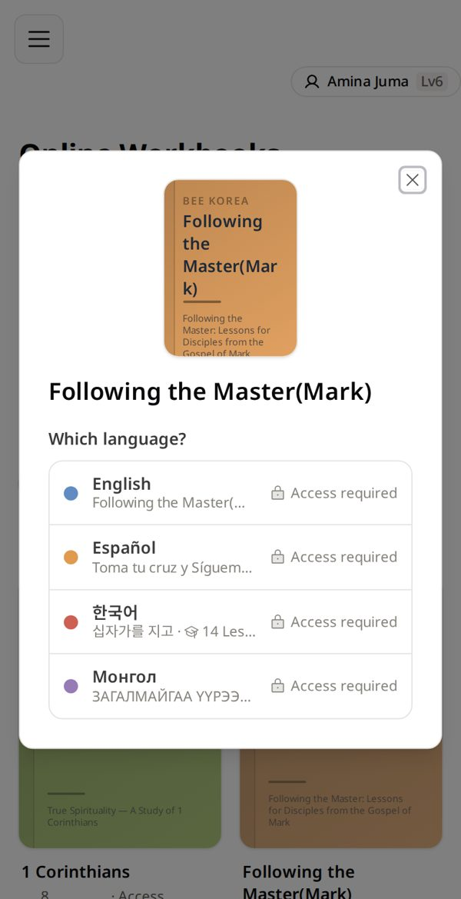
Choose your language내 언어를 고르세요
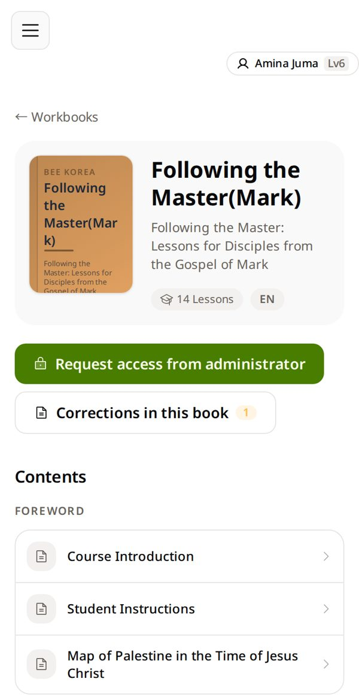
Tap Request access from administratorRequest access from administrator
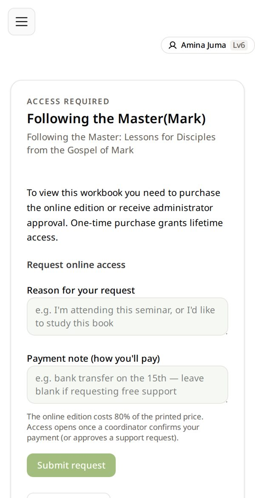
Write why and how you pay → Submit request이유와 낼 방법 → Submit request
e.g. “I am in the Mark seminar” · “bank transfer on the 15th”.예: 「마가복음 세미나를 듣습니다」 · 「15일에 계좌이체」.
Following the Master ✳
Request pending
⏳ Request pending
↓
Start Studying
Wait for Start StudyingStart Studying 이 뜰 때까지
A coordinator opens it after your payment. Your answers are saved in your account.입금이 확인되면 코디가 열어 줍니다. 내 답은 계정에 저장됩니다.
Paid but still pending? Tell the person who invited you.냈는데 계속 Pending 이면 소개해 준 분께 알려 주세요.
Academy → My CoursesAcademy → My Courses
Every seminar you are in.내가 들어 있는 세미나 전부.
Read your status and fee상태와 수강료를 보세요
Approved = you are in. Red Due = money still to pay. Tap the card to open it.Approved = 들어왔음. 빨간 Due = 아직 낼 돈. 카드를 누르면 열립니다.
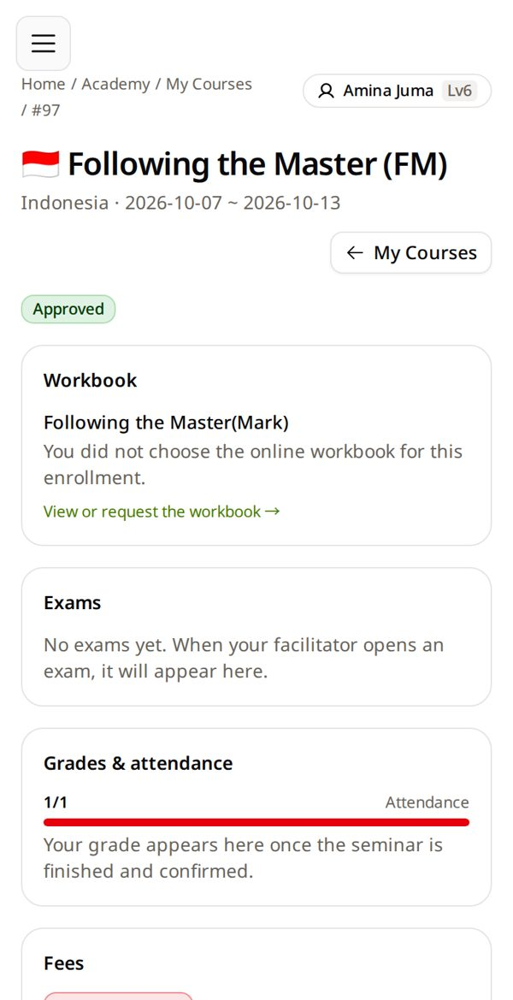
Everything is in one room한 방에 다 있어요
Workbook · Exams · Grades & attendance · Fees. Your grade comes when the seminar is finalized.학습서 · 시험 · 성적·출석 · 수강료. 성적은 세미나가 종강되면 나옵니다.
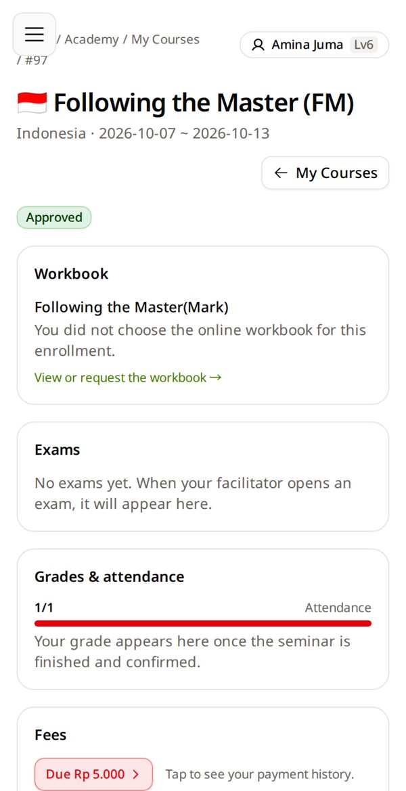
Tap the fee → check your receipts수강료 → 영수증 확인
Amount right? Tap Yes, I paid this. Wrong? Tell your facilitator before the seminar ends.금액이 맞으면 Yes, I paid this. 틀리면 종강 전에 인도자에게.
Your room → Exams내 방 → Exams
Nothing there? The exam is not open yet.아무것도 없으면 아직 시험이 열리지 않은 것입니다.
Exams ✳
Unit 1 exam20 minutes · open now
Start exam
Tap Start examStart exam 을 누르세요
The time starts. Each answer saves as you go.시간이 시작됩니다. 답은 그때그때 저장됩니다.
Question 1 ✳
Who wrote the Gospel of Mark?
○ Peter
● John Mark
○ Luke
Submit
Answer → Submit답하기 → Submit
Submitted is final — check first.제출하면 끝 — 먼저 확인하세요.
Do not leave the page to look things up — leaving is recorded.찾아보려고 화면을 나가지 마세요 — 나간 것이 기록됩니다.
✓
Well done!잘했어요!
Come back to this guide any time.언제든 이 가이드로 돌아오세요.
❓ How do I…이럴 땐
🗑Cancel a wrong application잘못한 신청 취소
While it is Pending: My Courses → its card → Cancel Application. You can apply again.
Pending 인 동안: My Courses → 그 카드 → Cancel Application. 다시 신청할 수 있어요.
🔎Find my seminar again내 세미나 다시 찾기
☰ → My Courses.
☰ → My Courses.
📱Study on another phone다른 폰에서 공부
Sign in the same way. Your answers and underlines are in your account.
같은 방법으로 로그인. 답과 밑줄은 계정에 있어요.
🌐Workbook in my language내 언어 학습서
On the cover, pick your language. If it is not there, the book is not in that language yet.
표지에서 언어를 고릅니다. 없으면 아직 그 언어판이 없는 것입니다.
🆘 I'm stuck막혔어요
I can't find my seminar내 세미나가 안 보여요
It may not be open for applications yet. Ask your facilitator — do not apply to a different one.
아직 신청을 받지 않는 것일 수 있어요. 인도자에게 물어보세요 — 다른 반에 신청하지 마세요.
It says “Applied — waiting for approval”「Applied — waiting for approval」이라고 나와요
That is right — you applied. Your facilitator approves it.
맞게 된 것입니다 — 신청했어요. 인도자가 승인합니다.
I paid, but my book is still locked냈는데 책이 아직 잠겨 있어요
Tell the person who invited you. A coordinator opens it after checking the payment.
소개해 준 분께 알려 주세요. 코디가 입금을 확인한 뒤 열어 줍니다.
There is no “Start exam” button「Start exam」 단추가 없어요
You are not approved in that seminar yet, or the exam is not open.